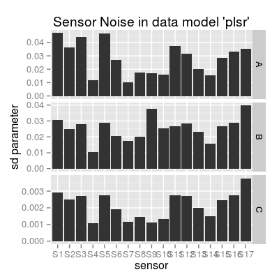
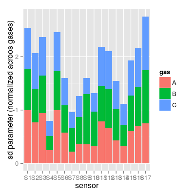

Dataset UNIMANsnoise.
Description
The dataset contains the statistics on degradation in the individual performance of UNIMAN sensor in terms of standard deviation of sensitivity coefficients computed over the long-term UNIMAN dataset.
Details
The datasets has one variable UNIMANsnoise of the
class list to store another list of coefficients
Bsd. The sd values themselves are stored in a
matrix of 3 rows and 17 columns under two categories:
- The class name:
SensorModelandSensor. - The model name:
plsr,mvr,broken-stickandplsr.
Thus, in order to access to the sd coefficients of 17
UNIMAN sensors for class Sensor and model
plsr, the command looks like
UNIMANsnoise$Bsd$Sensor$plsr.
Notes.
- A possible way to compare the sd coefficients (which UNIMAN sensors are more noisy) is to normalize them across gases and compare the resulted normalized values (see Example section). Indeed, it is not absolutely fair, as the sensitivity coefficient values (sd values are derived from) are different along sensors, and larger values tend to show larger sd.
Examples
Warning message: data set ‘UNIMANsnoise’ not foundList of 1 $ Bsd:List of 2 ..$ SensorModel:List of 4 ..$ Sensor :List of 4List of 4 $ plsr : num [1:3, 1:17] 0.04712 0.03075 0.00291 0.0363 0.02512 ... $ mvr : num [1:3, 1:17] 0.04712 0.03075 0.00291 0.0363 0.02512 ... $ broken-stick: num [1:3, 1:17] 0.0831 0.01804 0.00212 0.06764 0.01457 ... $ ispline : num [1:9, 1:17] 0.1816 0.1297 0.4216 0.0365 0.0272 ...# SD parameters for a particular data model 'plsr' Bsd <- UNIMANsnoise$Bsd$Sensor$plsr # plot #1 df <- melt(Bsd, varnames = c("gas", "sensor")) df <- mutate(df, gas = LETTERS[gas], sensor = factor(paste("S", sensor, sep = ""), levels = paste("S", 1:17, sep = ""))) p1 <- qplot(sensor, value, data = df, geom = "bar") + facet_grid(gas ~ ., scales = "free_y") + labs(x = "sensor", y = "sd parameter", title = "Sensor Noise in data model 'plsr'") p1
# plot #2 Bsd.norm <- t(apply(Bsd, 1, function(x) x / max(x))) df <- melt(Bsd.norm, varnames = c("gas", "sensor")) df <- mutate(df, gas = LETTERS[gas], sensor = factor(paste("S", sensor, sep = ""), levels = paste("S", 1:17, sep = ""))) p2 <- ggplot(df, aes(x = sensor, y = value, fill = gas)) + geom_bar(position = "stack") + labs(x = "sensor", y = "sd parameter (normalized acroos gases)") p2
# plot PCA plots for sensors different in the noise level set.seed(10) sa1 <- SensorArray(model = "plsr", num = c(4, 7, 14), csd = 0, ssd = 1, dsd = 0) p3 <- plotPCA(sa1, set = rep(c("A", "B", "C"), 10), air = FALSE) + labs(title = "Less noisy sensors") p3
sa2 <- SensorArray(model = "plsr", num = c(1, 5, 17), csd = 0, ssd = 1, dsd = 0) p4 <- plotPCA(sa2, set = rep(c("A", "B", "C"), 10), air = FALSE) + labs(title = "More noisy sensors") p4


See also
SensorNoiseClass